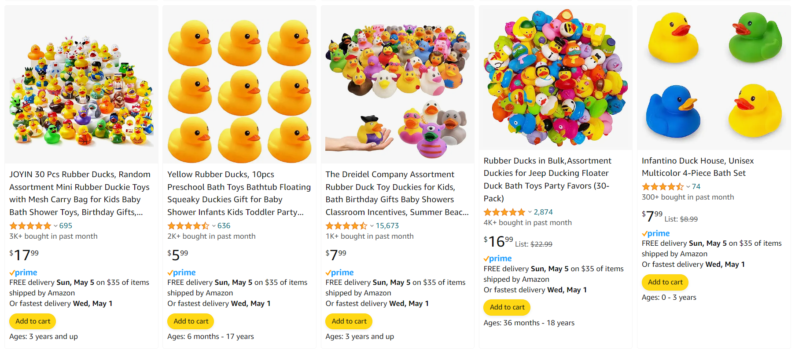
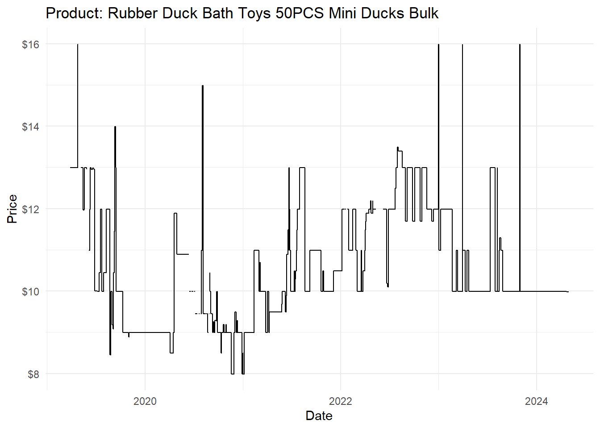
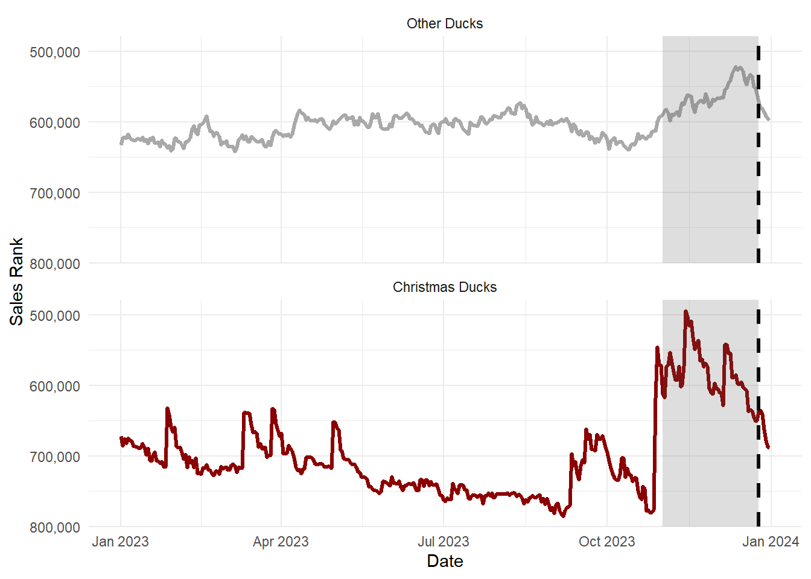
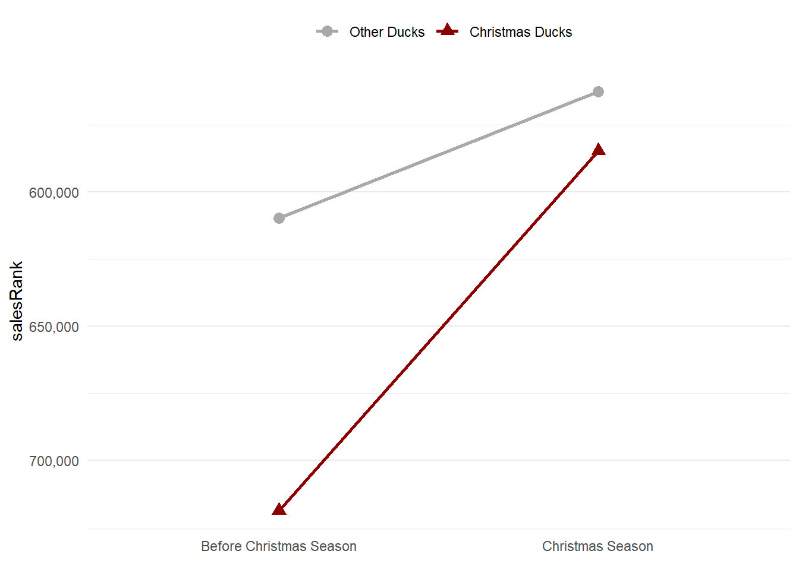

file.edit("~/.Rprofile")keepar
keepar: An R Package for Online Marketplace Data in Social Science Research
Abstract
Researchers frequently use online marketplace data for social science research. However, obtaining and processing such data is cumbersome and often involves web scraping or access to a pre-existing database. One such database is the commercial data provider Keepa, which tracks Amazon products and sellers over time. While this database is accessible via API, identifying, acquiring, and transforming the data into a suitable format for social science research requires significant effort. This article introduces the keepar package, an R package designed to simplify working with this Amazon marketplace data. Through an illustrative research project analyzing the market for rubber ducks on Amazon, this article explains how to use the package to work with Keepa data. By making the corresponding R package open source and available on GitHub, this article aims to facilitate further use of this rich data source in social science research.
1 Introduction
Particularly in business and economics, researchers have frequently used online marketplace data to study digital platforms. One research stream, for example, pertains to how large digital platforms shape competition and how they might engage in self-preferencing—giving preference to their own offers over competing ones (e.g., Reimers and Waldfogel 2023; Farronato, Fradkin, and MacKay 2023; Waldfogel 2024; Jürgensmeier, Bischoff, and Skiera 2024; Jürgensmeier and Skiera 2024).
Unfortunately, obtaining and processing the relevant online marketplace data in sufficient quantity is cumbersome. For example, researchers can use web scraping or query commercial databases of historical marketplace data. While the former comes with legal, ethical, and technical limitations (Boegershausen et al. 2022), the latter promises a more convenient avenue for researchers to acquire marketplace data. Such commercial databases typically provide an application programming interface (API) to obtain data. However, users need technical programming expertise to interact with this API and transform the acquired data into a research-suitable format. Even if such technical skills are available, researchers must invest substantial time to understand the API documentation and translate it to code that implements the desired process.
Researchers could better spend this time and effort dealing with research itself—e.g., analyzing the data and drawing conclusions from it. Thus, this article introduces keepar, a package for the programming language R, which simplifies the process of identifying, obtaining, and transforming online marketplace data from Keepa’s database. With this package, researchers can easily interface with Keepa’s database, which, as of June 2024, contains historical records of more than 4.6 billion products on eleven Amazon marketplaces across the globe (Keepa 2024c).
Keepa has developed software to interface with their API using the programming languages Java (Keepa 2024a) and PHP (Keepa 2024b). Additionally, a community-developed Python package exists to access the Keepa database (Kaszynski 2024). This article and the corresponding R package make a further contribution to those existing software packages in two main ways.
First, it provides users of R easy access to the Keepa data through the API. Unlike the aforementioned common-purpose programming languages, R was developed specifically for data analysis and visualization (Ihaka and Gentleman 1996). Thus, it is particularly widespread among academics for conducting research (Giorgi, Ceraolo, and Mercatelli 2022). Hence, the keepar package targets users who prefer using R for their entire research project, from obtaining the raw data to estimating statistical models.
Second, the keepar package provides additional functions required to transform the obtained raw data into a format suitable for commonly used statistical methods for social science research. Thus, researchers can leverage the package to identify, acquire, and transform the data into a required format for their research.
1.1 Aim: Facilitating Research into Online Marketplaces by Introducing the keepar Package Through an Illustrative Research Project
This article aims to show how social science researchers can use the keepar package to identify, acquire, and transform Amazon marketplace data. To this end, the article seeks to facilitate use of both the package and data by providing and discussing R code for all steps required to implement this analysis—from data acquisition to data transformation to model estimation.
I do so by illustrating a mock research project analyzing the market for rubber ducks. Ultimately, this article shows how researchers can transform the acquired data for use in standard econometric methods. The empirical analysis implements a simple differences-in-differences analysis to estimate how much the sales of Christmas-themed rubber ducks increase during the Christmas season compared to all other rubber ducks.
When consumers search for “rubber duck” on Amazon, they can choose from many different products. These rubber ducks vary in design, price, and ratings. Figure 1 shows some examples of rubber ducks on the first page of the search results—but that is only the beginning. As the subsequent analysis reveals, Amazon lists hundreds of rubber ducks on the marketplace. Using the illustrative example of these little rubber ducks, this article will walk through the functions of the keepar package. While this rubber duck exercise may initially seem a bit silly, it mirrors the relevant steps a social sciences researcher would take when acquiring and analyzing online marketplace data.

1.2 Requirement: A Tidy Panel Data Set of Rubber Ducks
Again, this article aims to facilitate research into online marketplaces by providing an accessible package for most aspects of data identification, acquisition, and preparation for Amazon marketplace data. Before obtaining the raw data, let us define which data structure we require to fulfill this aim. Many standard econometric methods require a tidy panel data set that includes the relevant product information—for example, daily historical price data. What exactly does that mean? We want to create a data set that is
tidy by following the tidy data principle (Wickham et al. 2019). Most importantly, every column will represent a variable, and every row will represent a single observation of all variables;
a panel, meaning it includes the historical data of multiple products. Specifically, this means that we have a variable identifying the product (the ASIN—Amazon Standard Identification Number) and one variable identifying the time (often, it will be a date for a daily panel frequency). The combination of
ASIN\(\times\)datewill then uniquely identify each observation, i.e., each row.
Eventually, the data set should look like Table 1, which illustrates the above principles.
| ASIN | Date | Price | Sales Rank | … |
|---|---|---|---|---|
| ASIN-Rubber-Duck-A | today | 9.99 | 2 | |
| ASIN-Rubber-Duck-A | yesterday | 8.99 | 1 | |
| ASIN-Rubber-Duck-B | today | 12.49 | 1 | |
| ASIN-Rubber-Duck-B | yesterday | 14.99 | 2 | |
| … |
This data structure will allow us to work easily with the data in various ways—be it visualization through ggplot2, data wrangling with dplyr, or regression modeling with fixest. Before estimating sophisticated models, however, we must first identify, acquire, and transform the data.
The remainder of this article walks the reader through these steps. The following section first outlines how to use keepa’s functions to identify, acquire, and transform the data. Then, the article shows how to use this prepared data to conduct an illustrative research project. The last section includes a summary, conclusions, and an outlook for further research.
2 Identifying, Acquiring, and Transforming the Data
Fulfilling our aim—facilitating online marketplace research by making the Keepa data more accessible through the R programming language—requires several steps. In a very simplified outline, we will:
- Identify the ASINs (i.e., product identifiers) for all relevant products.
- Obtain the raw product data for all identified ASINs.
- Transform the raw product data into a well-structured panel data set.
Before we can do that, however, we must undertake some preparation.
2.1 Preparation
2.1.1 API Access and Workspace Setup
While Keepa offers a free but restricted account, we will require a paid subscription for API access. Currently, the cheapest subscription includes limited access to the API. Depending on how much data you need to download (and how quickly), you might need a more expensive subscription. You can read about the available plans at Keepa.com/#!api. I recommend starting with the cheapest subscription and upgrading if necessary.
Before we start, please store your private API key. A convenient way is to add this API key as a system environment variable in the .RProfile file. You can use the following code to open the file:
Then, add Sys.setenv("KEEPA_API_KEY" = "insert your private Keepa API Key here") to the .RProfile file. Finally, load the API key into your workspace by running:
api_key <- Sys.getenv("KEEPA_API_KEY")Let us start by loading the keepar package. Before loading it, you must install the package once on your machine by running devtools::install_github("lukas-jue/keepar"). (You also need the package devtools, which you can install through install.packages("devtools").)
library(keepar)While this article introduces the most common functions, you can access the package’s complete documentation, including all available functions, by running the command help(package = keepar).
You can test whether your API access works by checking your API account’s status:
check_status(api_key)
#> # A tibble: 1 x 7
#> timestamp tokensLeft refillIn refillRate tokenFlowReduction
#> <dttm> <int> <Period> <int> <dbl>
#> 1 2025-01-05 16:32:40 300 40.16S 5 0
#> # i 2 more variables: tokensConsumed <int>, processingTimeInMs <int>Every API call costs tokens. The greater the number of products or the more detailed the requested data is, the more tokens it will consume. Calling the API to check its status through check_status does not consume any tokens and returns tokensLeft. This value indicates how many tokens are currently available on your account.
If your token balance becomes negative, you can only make new requests once the balance becomes positive again. Figuring out when this will occur takes some calculations. The following function implements this functionality:
check_sufficient_tokens(api_key)
#> # A tibble: 1 x 3
#> tokensBalance secondsUntilTokensPositive datetimeTokensPositive
#> <int> <dbl> <dttm>
#> 1 300 0 2025-01-05 17:32:402.1.2 Load Packages and Set Up Project Structure
In addition to the previously loaded keepar package, please load the tidyverse package for visualization and further data processing. Because the data can become voluminous, we will use the fast and highly efficient arrow package to save and read the data in the parquet format. Since we will work with many files and paths, we will also load the fs package to simplify this work.
library(tidyverse)
library(arrow)
library(fs)I suggest setting up an R project, as recommended by Bryan (2017). Using a project-oriented workflow enables a self-contained project that integrates easily into version control systems and is executable on the local machines of collaborators or others aiming to replicate or extend your analysis. Within this project, please create a folder data, into which we will download and transform the data.
2.2 Identify Relevant Products
First, we want to identify all relevant available rubber ducks on Amazon. But what does all relevant mean? How can we filter for specific products? This section explains and illustrates this selection process. As a first result, we want to count the number of all relevant available rubber ducks in the database.
2.2.1 Using the Product Finder to Obtain Product ASINs
Our journey starts on the Keepa website, where we use Keepa’s product finder to identify the products whose data we want to download. The product finder lets users filter the database to identify the relevant products. For example, you can filter products from a specific category, within specific price ranges, or offered by particular sellers. After setting the desired filters, we can use this tool to generate a .json file that contains all filters. Later, we can send this .json along with our API request to receive the product identifier—referred to as an ASIN.
After defining the relevant filters, click SHOW API QUERY in the product finder. You will then see a .json file similar to this one:
{
"title": "rubber duck",
"trackingSince_lte": 4733220,
"categories_include": [
"330390011"
],
"productType": [
"0"
],
"hasParentASIN": false,
"sort": [
[
"current_SALES",
"asc"
]
],
"perPage": 100,
"page": 0
}Save this .json file in your project directory. I recommend you name it data/1-getASIN/product-finder-api-query.json.
2.2.2 Calling the Product Finder API to Obtain the ASINs
You can obtain the ASINs matching your filter conditions by sending the .json file as a payload to the API. First, you read the .json file into your environment.
payload <- readr::read_file(
"data/1-getASIN/product-finder-api-query.json"
)Second, define the marketplace for which you want to get to get ASINs and call the API through get_product_asin().
domain_id <- 1
product_asin <- get_product_asin(api_key, domain_id, payload)This call will yield a data frame containing the first 100 ASINs that match your filter criteria (in ascending order by sales rank, i.e., the best-selling product comes first).
product_asin
#> # A tibble: 100 x 1
#> asin
#> <chr>
#> 1 B07L6BBW2Q
#> 2 B07PB9GVPT
#> 3 B07SMV3L4V
#> 4 B007FPX8Z2
#> 5 B01DW6S72Q
#> 6 B07GMSSXN5
#> 7 B008C2F0HQ
#> 8 B00DS4EY4S
#> 9 B07HCQTDK7
#> 10 B00ILCA9G4
#> # i 90 more rowsNow, save this file to the pre-defined folder. Saving the ASINs will make your research more reproducible; since Keepa’s database (and the underlying sales ranks on Amazon) update continuously, re-running the same code later will yield a different set of ASINs.
write_parquet(product_asin, "data/1-getASIN/asin-page-0.parquet")If you only need up to 100 products, you can skip the following paragraphs and jump to the next subsection.
However, you will often want to obtain more than the first 100 ASINs. In this case, we must send multiple requests by iterating through the page variable in the .json file. Here is how you can do that:
pages <- 1:2 # pages 2 and 3
for (i in pages) {
payload_edited <- payload |>
str_replace("page\\\": 0", paste0("page\\\": ", i))
product_asin <- get_product_asin(
api_key, domain_id, payload_edited
)
write_parquet(
product_asin, paste0("data/1-getASIN/asin-page-", i, ".parquet")
)
}Note that, unlike the programming language R, the API request starts counting from 0. So the second page is 1 instead of 2. We number the files accordingly, starting from 0.
Once you have saved multiple ASIN files, we want to re-read them into our workspace and bind them together to have a list of all ASINs. First, we identify all files on the disk which we want to read in:
vec_path_asin <- dir_ls("data/1-getASIN/") |> str_subset("parquet")
vec_path_asin
#> [1] "data/1-getASIN/asin-page-0.parquet" "data/1-getASIN/asin-page-1.parquet"
#> [3] "data/1-getASIN/asin-page-2.parquet"Then, we read them all at once with the help of purrr::map_dfr:
df_asin <- map_dfr(vec_path_asin, read_parquet)After reading the data, we can finally answer the initial question: How many rubber ducks are available? We selected quite a narrow set of products with 247 rubber ducks, each represented by its ASIN.
nrow(df_asin)
#> [1] 247However, obtaining the relevant ASINs for our products of interest is only the first step. We now want to analyze the product characteristics.
2.3 Obtaining Raw Product Data
Once we have identified products for which we want to obtain detailed information—by obtaining their ASINs—we can query Keepa’s database to return such information.
First, we create batches of up to 100 ASINs because the Keepa API will only return information on a maximum of 100 products for one API request.
lst_product_batches <-
df_asin |>
mutate(batch_id = (row_number() - 1) %/% 100) |>
group_by(batch_id) |>
nest() |>
pull(data)The newly generated lst_product_batches is a list of data frames that include a maximum of 100 ASINs. Now, we can query the Keepa API for detailed data on each of these ASINs.
2.3.1 Requesting Data for up to 100 Products
First, we build the API request URL for the first 100 ASINs
vec_asin <- lst_product_batches[[1]]$asin
product_request_url <- build_product_url(
api_key, domain_id, vec_asin,
offers = 20,
rating = 1,
buybox = 1
)Then, we query Keepa’s API by calling the defined URL:
lst_products <- get_product(product_request_url)The response is a large list. If it is your first time downloading the data, please take some time to view the raw data through View(lst_products). The values are not necessarily self-explanatory (which is part of the reason for providing the keepar package). You can read the detailed explanation for each field in Keepa’s Product Object documentation.
I recommend saving this raw response in .json format to your disk so that you can always return to the raw data later. We use the jsonlite package to save .json files.
jsonlite::write_json(
lst_products,
"data/2-rawData/0001-raw-data.json",
auto_unbox = TRUE
)We have now requested and saved data from 100 products. If that is sufficient, you can skip the following subsection and continue with Section 2.4.
2.3.2 Requesting Data for More than 100 Products
If you require data on more than 100 products, you must request the data in batches of up to 100 products each. You can execute this request with the following loop, which automates the request timing. Once you have used up all tokens, the loop will automatically wait until your token balance is positive again. Only then will the script execute the subsequent request.
for (i in 1:length(lst_product_chunks)) {
product_url <- build_product_url(
api_key, domain_id, lst_product_batches[[i]]$asin,
offers = 20,
rating = 1,
buybox = 1
)
# check if there are sufficient tokens, else wait
status <- check_sufficient_tokens(api_key)
if (status$tokensBalance < 1) {
message(
paste(
"waiting", round(status$secondsUntilTokensPositive / 60, 2),
"minutes until",
Sys.time() + status$secondsUntilTokensPositive + 60,
"when token balance is positive again"
)
)
Sys.sleep(status$secondsUntilTokensPositive + 60)
}
# request data from API
lst_products <- get_product(product_url)
# save
jsonlite::write_json(
lst_products,
paste0(
"data/2-rawData/",
formatC(i, width = 4, format = "d", flag = "0"),
"-raw-data.json"
),
auto_unbox = TRUE
)
# print status
message(
paste0(
i, "/", length(lst_product_chunks), " | ",
round(100 * i / length(lst_product_chunks), 0), "% ",
"of batches saved at ", Sys.time(),
" | ", check_sufficient_tokens(api_key)$tokensBalance,
" tokens left")
)
}We have now successfully saved all required raw data to our disk. However, we cannot do much with the raw .json files unless we transform them into an appropriate format for typical research methods.
2.4 Transforming the Raw Data to Tidy Panel Data for our Analysis
To transform the raw data, we first read it back into the workspace. Again, we use the purrr package and its map function to read all files into one list.
vec_path_json <- dir_ls("data/2-rawData/") |>
str_subset("json")
lst_json <- map(vec_path_json, jsonlite::fromJSON)Once we have loaded all the raw data into our workspace, we can extract the relevant data from it.
We do so with a suite of functions, explained in the following subsections. These subsections start with extracting the product metadata and then discuss the extraction of time-varying data, such as prices and sales ranks.
2.4.1 Product Metadata
2.4.1.1 tidy_product extracts most product-level metadata.
The function tidy_product generates a tidy data frame that includes most of the product metadata in the raw data. Every row corresponds to a single product, identified through its ASIN. This data frame includes, for example, information on the product title, its manufacturer, brand, and rootCategory (i.e., the broadest category of the product).
df_products <- map_dfr(lst_json, tidy_product)
df_products
#> # A tibble: 247 x 54
#> asin title domainId lastUpdate imagesCSV manufacturer
#> <chr> <chr> <int> <dttm> <chr> <chr>
#> 1 B07L6BBW2Q Rubber Duck B~ 1 2024-04-30 13:02:00 71wbjkVH~ LOUHUA
#> 2 B07PB9GVPT Happy Trees D~ 1 2024-04-30 13:02:00 511Wd7ip~ Lanterns ho~
#> 3 B07SMV3L4V 50-Pieces Flo~ 1 2024-04-30 13:02:00 51Fm8Kle~ Guaren us
#> 4 B007FPX8Z2 Rubber Duck N~ 1 2024-04-30 13:02:00 41dQMuVN~ Duckshop
#> 5 B01DW6S72Q Rubber Duck -~ 1 2024-04-30 13:02:00 41DO0edx~ Duckshop
#> 6 B07GMSSXN5 Teacher Rubbe~ 1 2024-04-30 13:02:00 41fcj9xb~ Ducks in th~
#> 7 B008C2F0HQ Waddlers Rubb~ 1 2024-04-30 13:02:00 61w5aV1h~ Assurance I~
#> 8 B00DS4EY4S Rubber Duck D~ 1 2024-04-30 13:02:00 61avUzkp~ Duckshop
#> 9 B07HCQTDK7 Golfer Rubber~ 1 2024-04-30 13:02:00 71NYdXNO~ Schnabels
#> 10 B00ILCA9G4 Dozen Classic~ 1 2024-04-30 13:02:00 61e7+eEb~ <NA>
#> # i 237 more rows
#> # i 48 more variables: lastPriceChange <dttm>, rootCategory <dbl>,
#> # productType <int>, type <chr>, hasReviews <lgl>, trackingSince <dttm>,
#> # brand <chr>, productGroup <chr>, partNumber <chr>, model <chr>,
#> # color <chr>, size <chr>, packageHeight <int>, packageLength <int>,
#> # packageWidth <int>, packageWeight <int>, packageQuantity <int>,
#> # isAdultProduct <lgl>, isEligibleForTradeIn <lgl>, ...2.4.1.2 get_product_category_tree extracts products’ category trees
Each product can be listed in multiple categories, organized in a hierarchical category tree. get_product_category_tree extracts this category tree:
df_category_tree <- map_dfr(lst_json, get_product_category_tree)
df_category_tree
#> # A tibble: 739 x 4
#> asin catId catName catDepth
#> <chr> <int> <chr> <int>
#> 1 B07L6BBW2Q 165793011 Toys & Games 1
#> 2 B07L6BBW2Q 196601011 Baby & Toddler Toys 2
#> 3 B07L6BBW2Q 330390011 Bath Toys 3
#> 4 B07PB9GVPT 165793011 Toys & Games 1
#> 5 B07PB9GVPT 196601011 Baby & Toddler Toys 2
#> 6 B07PB9GVPT 330390011 Bath Toys 3
#> 7 B07SMV3L4V 165793011 Toys & Games 1
#> 8 B07SMV3L4V 196601011 Baby & Toddler Toys 2
#> 9 B07SMV3L4V 330390011 Bath Toys 3
#> 10 B007FPX8Z2 165793011 Toys & Games 1
#> # i 729 more rowsThis data frame contains the category’s ID (catId), name (catName), and depth (catDepth). The latter indicates a category’s position in the category tree: catDepth == 1 indicates a product’s broadest category. The higher this value, the narrower (i.e., more specific) the category.
For the first product in the data frame, our category tree appears as follows:
df_category_tree_first <- df_category_tree |>
filter(asin == "B07L6BBW2Q")
df_category_tree_first
#> # A tibble: 3 x 4
#> asin catId catName catDepth
#> <chr> <int> <chr> <int>
#> 1 B07L6BBW2Q 165793011 Toys & Games 1
#> 2 B07L6BBW2Q 196601011 Baby & Toddler Toys 2
#> 3 B07L6BBW2Q 330390011 Bath Toys 3We can see that the broadest category is Toys & Games, and the narrowest is Bath Toys. You can quickly access those categories through get_product_broadest_category and get_product_narrowest_category.
2.4.2 Historical Event Data
Beyond obtaining the current metadata, we are interested in the historical development of a product’s characteristics. We can obtain such data through the following functions.
Importantly, all historical data is in an event data format. This format means that there will only be a new row in the data frame if the respective information has changed. This format differs from the typical data we use in social sciences, which is often evenly-spaced panel data with a single observation on each day or week. In contrast, event data features an irregularly spaced frequency and can have multiple observations per day or none for weeks, depending on how frequently the underlying product characteristics have changed.
2.4.2.1 get_product_price_buybox extracts the product’s buy box price history
Every product on Amazon can have multiple sellers competing to sell the same product. Hence, every product can have various offers. Amazon simplifies the process of consumers picking a seller by recommending a default seller through the buy box. In analyses, it often makes sense to focus on the offer that wins the buy box because most customers buy from this recommended seller (Zeibak 2020; Lanxner 2019).
We now extract one of the most relevant historical product characteristics—the price. More precisely, this is the price of the offer occupying the buy box at the given time.
df_buybox_price <- map_dfr(lst_json, get_product_price_buybox)
df_buybox_price
#> # A tibble: 20,465 x 4
#> asin datetime priceBuybox shippingBuybox
#> <chr> <dttm> <dbl> <dbl>
#> 1 B07L6BBW2Q 2019-03-27 23:34:00 13.0 0
#> 2 B07L6BBW2Q 2019-04-24 20:30:00 16.0 0
#> 3 B07L6BBW2Q 2019-04-27 02:04:00 NA NA
#> 4 B07L6BBW2Q 2019-05-06 01:48:00 13.0 0
#> 5 B07L6BBW2Q 2019-05-14 08:36:00 12.0 0
#> 6 B07L6BBW2Q 2019-05-14 21:20:00 12.0 0
#> 7 B07L6BBW2Q 2019-05-18 14:42:00 12.0 0
#> 8 B07L6BBW2Q 2019-05-19 19:24:00 13.0 0
#> 9 B07L6BBW2Q 2019-05-27 18:52:00 13.0 0
#> 10 B07L6BBW2Q 2019-05-28 19:38:00 13.0 0
#> # i 20,455 more rowsIf priceBuybox == NA, then the product did not have an active buy box seller at that particular time. That either means that the product was unavailable or that no seller qualified to win the buy box. Note that the resulting data frame includes two price columns: priceBuybox (the buy box price) and shippingBuybox (the shipping cost of the buy box offer). Often, shippingBuybox is zero. However, I recommend adding both to compute a price variable.
We can now visualize the development of a product’s prices over time. For simplicity, let us focus on the first rubber duck.
vec_asin_filter <- df_buybox_price |>
distinct(asin) |> slice(1) |> pull()
vec_title <- df_products |>
filter(asin %in% vec_asin_filter) |> select(title) |>
pull() |> str_sub(1, 43)
df_buybox_price |>
filter(asin %in% vec_asin_filter) |>
mutate(price = priceBuybox + shippingBuybox) |>
ggplot(aes(datetime, price)) +
geom_step() +
scale_y_continuous(labels = scales::dollar) +
labs(
title = paste0("Product: ", vec_title),
x = "Date",
y = "Price"
) +
theme_minimal()

Figure 2 already provides rich information on the product. We can see that the prices of rubber ducks vary strongly over time. While the cheapest available price over time is $7.99, the offer peaked at double this price ($15.99) for short durations.
Because the line indicating the price is missing for some dates, we can conclude that the product was not always available—if the price is missing, it implies that no seller won the buy box.
2.4.2.2 get_product_buybox_history extracts the product’s buy box seller history
You can obtain information on which seller won the buy box at which time through get_product_buybox_history. Note that this function only works if you specify build_product_url(..., buybox = 1) such that the raw data includes information on the buy box history.
df_buybox_history <- map_dfr(lst_json, get_product_buybox_history)
df_buybox_history
#> # A tibble: 11,932 x 3
#> asin datetime buyBoxSeller
#> <chr> <dttm> <chr>
#> 1 B07L6BBW2Q 2019-03-27 23:34:00 AC5QQUYS4DT2W
#> 2 B07L6BBW2Q 2019-04-27 02:04:00 noSellerQualifiedBB
#> 3 B07L6BBW2Q 2019-05-06 01:48:00 AC5QQUYS4DT2W
#> 4 B07L6BBW2Q 2019-05-14 21:20:00 A2PNVNIOI1WGC
#> 5 B07L6BBW2Q 2019-05-18 14:42:00 AC5QQUYS4DT2W
#> 6 B07L6BBW2Q 2019-05-27 18:52:00 A12SR7AJCMRNG9
#> 7 B07L6BBW2Q 2019-05-30 04:54:00 noSellerOrOutOfStock
#> 8 B07L6BBW2Q 2019-06-05 09:24:00 AC5QQUYS4DT2W
#> 9 B07L6BBW2Q 2019-06-27 15:58:00 A3G1S0O0LEO4WI
#> 10 B07L6BBW2Q 2019-07-07 11:52:00 AC5QQUYS4DT2W
#> # i 11,922 more rowsIf you are interested in other prices, you can call get_product_price_amazon (for the price offered by Amazon as the seller) and get_product_price_marketplace (for the lowest non-Amazon offer).
2.4.2.3 get_product_sales_rank_reference extracts the sales rank history for the reference category
We can obtain the sales rank history to analyze how well a product has sold. The sales rank is a proxy for sales based on the following simplified logic: Amazon ranks all products by sales for a specific product category. The best-selling product in the category receives the sales rank 1, the second-best-selling product receives sales rank 2, and so on. Hence, the absolute value of the sales rank is only comparable within the same category.
Amazon provides—and Keepa tracks—different sales ranks for the same product. Often, the sales rank for a product’s reference category (also called root category) is useful—the reference category is the broadest available category. Hence, chances are highest that similar products fall into the same reference category, making the products’ sales ranks directly comparable.
You can extract the products’ sales ranks for the reference category through get_product_sales_rank_reference:
df_salesRank <- map_dfr(lst_json, get_product_sales_rank_reference)
df_salesRank
#> # A tibble: 366,810 x 4
#> asin datetime salesRankReference salesRank
#> <chr> <dttm> <chr> <int>
#> 1 B07L6BBW2Q 2018-12-27 19:00:00 165793011 4140161
#> 2 B07L6BBW2Q 2018-12-29 22:50:00 165793011 264291
#> 3 B07L6BBW2Q 2019-01-01 19:52:00 165793011 173252
#> 4 B07L6BBW2Q 2019-01-10 09:50:00 165793011 56206
#> 5 B07L6BBW2Q 2019-01-11 03:02:00 165793011 32908
#> 6 B07L6BBW2Q 2019-01-12 15:36:00 165793011 58844
#> 7 B07L6BBW2Q 2019-01-13 18:56:00 165793011 94892
#> 8 B07L6BBW2Q 2019-01-14 01:10:00 165793011 126124
#> 9 B07L6BBW2Q 2019-01-15 13:12:00 165793011 48033
#> 10 B07L6BBW2Q 2019-01-17 04:24:00 165793011 130129
#> # i 366,800 more rowsAs you can see from the number of observations in the resulting data frame, the sales rank data is comparatively abundant: 247 products yield 366,810 sales rank observations. Hence, it might be advisable to restrict your observation period to the smallest required time frame.
2.4.2.4 get_product_rating extracts the products’ star rating history
How well did consumers like the product over time? You can answer this question by extracting the products’ rating history, which shows a product’s star rating at historical points in time.
df_rating <- map_dfr(lst_json, get_product_rating)
df_rating
#> # A tibble: 1,937 x 3
#> asin datetime rating
#> <chr> <dttm> <dbl>
#> 1 B07L6BBW2Q 2019-03-27 23:34:00 5
#> 2 B07L6BBW2Q 2019-04-16 03:12:00 4.5
#> 3 B07L6BBW2Q 2019-04-18 01:26:00 4.6
#> 4 B07L6BBW2Q 2019-05-06 01:48:00 4.7
#> 5 B07L6BBW2Q 2019-05-14 02:40:00 4.3
#> 6 B07L6BBW2Q 2019-05-19 19:24:00 4.2
#> 7 B07L6BBW2Q 2019-05-23 14:08:00 4.3
#> 8 B07L6BBW2Q 2019-05-28 19:38:00 4.4
#> 9 B07L6BBW2Q 2019-06-10 22:24:00 4.5
#> 10 B07L6BBW2Q 2019-06-23 06:12:00 4.1
#> # i 1,927 more rows2.4.2.5 get_product_reviews extracts the products’ history of number of reviews
Beyond the star rating, you can also extract the number of reviews the given product had at past dates in its history. You can extract this historical information through get_product_reviews:
df_count_reviews <- map_dfr(lst_json, get_product_reviews)
df_count_reviews
#> # A tibble: 9,640 x 3
#> asin datetime countReviews
#> <chr> <dttm> <int>
#> 1 B07L6BBW2Q 2019-03-27 23:34:00 1
#> 2 B07L6BBW2Q 2019-04-16 03:12:00 2
#> 3 B07L6BBW2Q 2019-04-18 01:26:00 3
#> 4 B07L6BBW2Q 2019-05-06 01:48:00 4
#> 5 B07L6BBW2Q 2019-05-14 02:40:00 5
#> 6 B07L6BBW2Q 2019-05-19 19:24:00 6
#> 7 B07L6BBW2Q 2019-05-20 11:56:00 7
#> 8 B07L6BBW2Q 2019-05-23 14:08:00 8
#> 9 B07L6BBW2Q 2019-05-28 19:38:00 9
#> 10 B07L6BBW2Q 2019-05-30 04:54:00 10
#> # i 9,630 more rows2.4.3 Other functions
The keepar package contains some more functions to extract data from product objects. These include get_product_offers to check a product’s offers (i.e., which sellers have offered the product at least once) and get_product_offers_history to obtain the historical prices of those sellers’ offers.
2.5 Saving Product Data
Once you have extracted all relevant product data, you can save those to your disk. I recommend doing so since the data might become larger than your available memory once you combine the individual data in the next section. We can follow our initial folder structure and create a new data/3-tidyData/ folder for the tidy-ed data.
We can either save the data individually by data frame:
write_parquet(df_products, "data/3-tidyData/df_products.parquet")Or we can save them all at once:
# define a list with all data frames to save
lst(
df_products, df_category_tree, df_buybox_price,
df_buybox_history, df_salesRank, df_rating,
df_count_reviews
) |>
# save all data frames from the list individually
iwalk(
\(x, y) write_parquet(
x, paste0("data/3-tidyData/", y, ".parquet")
)
)2.6 Transforming Event to Panel Data
Until now, we have extracted product meta or event data from the raw product data. This manner of storing the raw data is efficient—you only have to record a new row when a product attribute (e.g., its price) has changed. However, many typical methods—for example (fixed effects) regressions—require evenly-spaced (panel) data.
Thus, we must convert the unevenly-spaced event data set to an evenly-spaced panel data set. Also, we only have individual variables stored in individual data frames (e.g., prices and sales ranks are in two different data sets). Thus, we want to create a single panel data set that features a single observation per day per product, and which includes all previously introduced historical product variables (e.g., prices, sales ranks, and ratings).
First, we read all previously saved data frames from the data/3-tidyData folder into a list called lst_df.
vec_path <- "data/3-tidyData"
lst_df <- dir_ls(vec_path) |>
map(read_parquet) |>
set_names(
basename(dir_ls(vec_path)) |>
str_remove_all(".parquet")
)2.6.1 Interlude: A Note on Time Zones
Before we can start transforming the data—specifically, transforming the datetime variable from irregularly-spaced events to regularly-spaced daily frequency—we must consider time zones. All datetime values in the above data frames are in Coordinated Universal Time (UTC). For example:
df_rating |> slice(1) |> pull(datetime)
#> [1] "2019-03-27 23:34:00 UTC"If you want to merge the above data with external data sources in local time, you need to transform the datetime variable. For example, the offset between UTC and Eastern Standard Time (EST) on the United States Amazon marketplace is -5 hours. We can transform the time zones with lubridate’s with_tz():
df_rating |> slice(1) |> pull(datetime) |> with_tz("EST")
#> [1] "2019-03-27 18:34:00 EST"If we want to transform all datetime in the lst_df data frames into the EST time zone, we can run the following code across all elements of lst_df:
lst_df <- lst_df |>
map(
\(x) x |>
mutate(
across(
where(is.POSIXct),
\(y) with_tz(y, "EST")
)
)
)2.6.2 Generating a Daily Panel of a Single Variable
Let us now start transforming the data from event to daily panel data. This subsection uses the buy box price data in df_buybox_price to explain the process and then provides the code for other variables.
2.6.2.1 Buy Box Price
First, however, we need to decide on which observation to use as the daily observation if there is more than one observation per day. Some options would be taking the mean, median, or the first or last price of the day. In the following, we take a cue from Jürgensmeier and Skiera (2024) and use the last daily observation to represent the daily value.
We start by extracting the last observation on each day for each product.
df_price_daily_raw <- lst_df$df_buybox_price |>
mutate(price = priceBuybox + shippingBuybox) |>
mutate(date = as.Date(datetime),
isPriceNa = if_else(is.na(price), TRUE, FALSE)) |>
group_by(asin, date) |>
slice(n()) |> # last observation: n(); first observation: 1
mutate(isPriceChange = TRUE)We then create a grid data frame—containing one row for each product and each date—and left join it with df_price_daily_raw.
df_grid <- df_price_daily_raw |>
construct_ts_grid_by_group()
df_price_daily <- df_grid |>
left_join(df_price_daily_raw, by = c("asin", "date")) |>
fill(c(price , isPriceNa), .direction = "down") |>
replace_na(list(isPriceChange = FALSE)) |>
mutate(price = if_else(isPriceNa == TRUE, as.numeric(NA), price)) |>
select(-c(datetime, priceBuybox, shippingBuybox))This procedure yields a tidy panel data set with daily frequency including all buy box prices.
df_price_daily
#> # A tibble: 288,037 x 5
#> date asin price isPriceNa isPriceChange
#> <date> <chr> <dbl> <lgl> <lgl>
#> 1 2017-05-26 B00001U0RG 9.99 FALSE TRUE
#> 2 2017-05-27 B00001U0RG 9.99 FALSE FALSE
#> 3 2017-05-28 B00001U0RG 9.99 FALSE FALSE
#> 4 2017-05-29 B00001U0RG 9.99 FALSE FALSE
#> 5 2017-05-30 B00001U0RG 9.99 FALSE FALSE
#> 6 2017-05-31 B00001U0RG 9.99 FALSE FALSE
#> 7 2017-06-01 B00001U0RG 9.99 FALSE FALSE
#> 8 2017-06-02 B00001U0RG 9.99 FALSE FALSE
#> 9 2017-06-03 B00001U0RG 9.99 FALSE FALSE
#> 10 2017-06-04 B00001U0RG 9.99 FALSE FALSE
#> # i 288,027 more rowsNote that this data frame has one observation for each date and product—irrespective of whether df_price_daily_raw contained an observation for that day. In the above code, fill(..., .direction = "down") fills all NA values in a downward direction with the last non-NA value. This procedure is valid because Keepa only stores an entry in the event data sets if the underlying value (e.g., the price) changes. Thus, if there is no entry in the raw data, the price remains unchanged, and we can replace the NA value with the last known price. Similarly, if the buy box was unavailable, i.e., the price in df_price_daily_raw is NA, the above code ensures that the below values will remain NA until the buy box becomes available again.
2.6.2.2 Sales Rank
Similar to the buy box price, we can transform the sales rank event to panel data through the following process:
df_sales_rank_daily_raw <- lst_df$df_salesRank |>
mutate(
date = as.Date(datetime),
isSalesRankNa = if_else(is.na(salesRank), TRUE, FALSE)
) |>
group_by(asin, date) |>
slice(n())
df_salesrank_daily <- df_sales_rank_daily_raw |>
construct_ts_grid_by_group() |>
left_join(df_sales_rank_daily_raw, by = c("asin", "date")) |>
fill(
c(salesRank, salesRankReference, isSalesRankNa),
.direction = "down"
) |>
mutate(salesRank = if_else(
isSalesRankNa == TRUE, as.integer(NA), salesRank)
) |>
select(-datetime)2.6.3 Generating a Daily Panel of Multiple Variables
We have now generated two panel data sets, one for the price variable and one for the salesRank variable. The following commands join those individual panels and generate a full panel data set that includes both variables.
df_panel_joined <- df_salesrank_daily |>
full_join(df_price_daily, by = c("asin", "date"))You can use the skim() function from the skimr package to easily generate the summary statistics for the resulting panel data set. This data set contains the daily information regarding prices and sales ranks for each product and enables us to use standard statistical methods, such as fixed-effects regression analyses, which often require evenly-spaced panel data.
skimr::skim(df_panel_joined)| Name | df_panel_joined |
| Number of rows | 458584 |
| Number of columns | 8 |
| _______________________ | |
| Column type frequency: | |
| character | 2 |
| Date | 1 |
| logical | 3 |
| numeric | 2 |
| ________________________ | |
| Group variables | None |
Variable type: character
| skim_variable | n_missing | complete_rate | min | max | empty | n_unique | whitespace |
|---|---|---|---|---|---|---|---|
| asin | 0 | 1.00 | 10 | 10 | 0 | 247 | 0 |
| salesRankReference | 36144 | 0.92 | 5 | 9 | 0 | 2 | 0 |
Variable type: Date
| skim_variable | n_missing | complete_rate | min | max | median | n_unique |
|---|---|---|---|---|---|---|
| date | 0 | 1 | 2015-02-01 | 2024-04-30 | 2020-11-11 | 3377 |
Variable type: logical
| skim_variable | n_missing | complete_rate | mean | count |
|---|---|---|---|---|
| isSalesRankNa | 12827 | 0.97 | 0.11 | FAL: 398498, TRU: 47259 |
| isPriceNa | 170547 | 0.63 | 0.13 | FAL: 250725, TRU: 37312 |
| isPriceChange | 170547 | 0.63 | 0.05 | FAL: 272977, TRU: 15060 |
Variable type: numeric
| skim_variable | n_missing | complete_rate | mean | sd | p0 | p25 | p50 | p75 | p100 | hist |
|---|---|---|---|---|---|---|---|---|---|---|
| salesRank | 60086 | 0.87 | 956370.58 | 1369065.71 | 446.00 | 299205.0 | 622698.00 | 1131003.00 | 13925552.0 | ▇▁▁▁▁ |
| price | 207859 | 0.55 | 15.31 | 8.86 | 2.44 | 10.3 | 13.89 | 16.99 | 124.1 | ▇▁▁▁▁ |
These summary statistics conclude the section on identifying, obtaining, and transforming product data with the keepar package and lead us toward the data analysis.
3 Illustrative Analysis: Sales of Christmas-Themed Rubber Ducks
Once we have generated a suitable data set, we can use it for our analyses. This section shows how to use the generated panel data for an illustrative difference-in-differences analysis, as pioneered by Card and Krueger (1993) and discussed in detail in canonical textbooks (e.g., Angrist and Pischke 2009).
Imagine you are a rubber duck seller offering a variety of differently-themed rubber ducks. You suspect that consumers would likely purchase more rubber ducks during the period leading up to Christmas. Furthermore, you suspect that these additional Christmas sales would be even higher for Christmas-themed rubber ducks relative to other types. To increase your sales, you decided to introduce Christmas-themed rubber ducks one year ago.
After this year, you want to evaluate how well your Christmas-themed rubber ducks sold in comparison to all other rubber ducks during the Christmas season. An appropriate method for such an assessment is a difference-in-differences analysis. With this approach, you can estimate how the Christmas season affects sales of Christmas-themed rubber ducks compared to other kinds of rubber ducks, as measured by a product’s sales rank.
3.1 Identify Christmas-Themed Ducks
Before we can start this analysis, we have to identify all Christmas-themed rubber ducks. We do so by checking whether the title variable in the data frame df_products contains either the word Santa or Christmas (without case sensitivity).
df_products_isChristmasDuck <- df_products |>
mutate(
isChristmasDuck = if_else(
str_detect(
title, "(?i)Santa|Christmas"),
"Christmas Ducks", "Other Ducks"
)
) |>
select(asin, title, isChristmasDuck)Our data set of 247 contains nine Christmas-themed rubber ducks.
df_products_isChristmasDuck |>
count(isChristmasDuck)
#> # A tibble: 2 x 2
#> isChristmasDuck n
#> <chr> <int>
#> 1 Christmas Ducks 9
#> 2 Other Ducks 238Now that we have identified whether each duck is Christmas-themed or not, we can visualize our historical product data set conditional on this information.
3.2 Visualize Sales Rank Development
For this analysis, we aim to visualize the sales rank development over time as a proxy for the products’ sales. Since we are interested in how well Christmas-themed rubber ducks sell compared to non-Christmas (i.e., “other”) rubber ducks, we visualize the mean daily sales rank for each of those two groups. Also, we generate a new variable isChristmasSeason, which indicates whether the observation is shortly before Christmas (i.e., between 2023-11-01 and 2023-12-25) or outside the Christmas season. The following code prepares the data accordingly and ensures that we include only the year 2023 for illustrative purposes.
df_panel_season_2023 <- df_panel_joined |>
left_join(df_products_isChristmasDuck, by = "asin") |>
mutate(
isChristmasSeason = if_else(
date >= as.Date("2023-11-01") & date <= as.Date("2023-12-25"),
TRUE, FALSE
)
) |>
group_by(date, isChristmasDuck, isChristmasSeason) |>
summarize(
salesRank = mean(salesRank, na.rm = TRUE)
) |>
filter(date >= "2023-01-01" & date <= "2023-12-31") |>
ungroup() |>
mutate(
isChristmasSeason = if_else(
isChristmasSeason, "Christmas Season",
"Before Christmas Season"
),
isChristmasSeason = relevel(
as.factor(isChristmasSeason), ref = "Before Christmas Season"
),
isChristmasDuck = as.factor(isChristmasDuck),
isChristmasDuck = relevel(
as.factor(isChristmasDuck), ref = "Other Ducks"
)
)For the interpretation of the following analysis, remember that a higher sales rank means fewer sales. The best-selling product exhibits a sales rank of one within its category. The lower the sales of the product, the higher its sales rank. Thus, the sales rank decreases when the product sells better.
Figure 3 plots the mean sales rank over time for Christmas-themed and other rubber ducks. The shaded area indicates the Christmas season in November and December, leading to Christmas Day on December 25. Based on Figure 3, sales of Christmas rubber ducks appear to be strongly seasonal. During the weeks before Christmas, the sales rank decreases substantially, which implies higher sales (note that the y-axis is inverted, such that a lower sales rank—reflecting more sales—appears higher).
In comparison, the sales rank of the other ducks decreases less strongly. Thus, both product groups seem to sell better during the Christmas period—compared to all other products in the same root category. But this increase in sales appears much stronger for Christmas-themed rubber ducks.
df_panel_season_2023 |>
ggplot(aes(
date, salesRank,
color = isChristmasDuck, label = isChristmasDuck)
) +
geom_line(linewidth = 1.2) +
geom_vline(
xintercept = as.Date("2023-12-25"),
linetype = "dashed", linewidth = 1.2
) +
annotate(geom = "rect",
xmin = as.Date("2023-11-01"),
xmax = as.Date("2023-12-25"),
ymin = -Inf,
ymax = +Inf,
alpha = 0.2) +
scale_y_reverse(label = scales::comma) +
scale_color_manual(values = c("darkgrey", "darkred")) +
labs(
x = "Date",
y = "Sales Rank"
) +
theme_minimal() +
theme(legend.position = "none") +
facet_wrap(~isChristmasDuck, nrow = 2)

3.3 Difference-in-Differences Estimation
We now want to quantify the difference-in-differences between the sales rank of Christmas-themed vs. other rubber ducks before and during the Christmas period. Thus, we designate the Christmas-themed rubber ducks as the treatment and the other rubber ducks as the control group.
Before we estimate the corresponding regression model, we visualize the difference-in-differences between the treatment and control group before and during the Christmas season.
By comparing the respective mean sales ranks, Figure 4 shows that the sales rank of Christmas-themed rubber ducks decreases much more strongly (note the reversed y-axis) than the control group of other rubber ducks. Again, this visualization implies that Christmas-themed rubber ducks sell particularly well, even beyond the expected increase in sales for all rubber ducks during the Christmas season.
df_panel_season_2023 |>
group_by(isChristmasDuck, isChristmasSeason) |>
summarize(
salesRank = mean(salesRank), .groups = "drop"
) |>
ggplot(aes(x = isChristmasSeason, y = salesRank, color = isChristmasDuck, shape = isChristmasDuck)) +
geom_line(aes(group = isChristmasDuck), linewidth = 1) +
geom_point(size = 3) +
scale_color_manual(values = c("darkgrey", "darkred")) +
scale_x_discrete(limit = c("Before Christmas Season", "Christmas Season")) +
scale_y_reverse(label = scales::comma) +
labs(x = element_blank()) +
theme_minimal() +
theme(
panel.grid.major.x = element_blank(),
panel.grid.minor.x = element_blank(),
legend.position = "top",
legend.title = element_blank()
)

We then estimate the difference-in-differences model with log(salesRank) as the dependent variable, and isChristmasDuck, isChristmasSeason, as well as their interaction, as independent variables. We take the natural logarithm of each sales rank because it enables a relative interpretation of changes in the sales rank such that we can report more intuitive percentage changes.
More precisely, we aim to estimate the following regression model:
\[\begin{align} log(\mathit{salesRank}_{it}) = \, &\beta_0 + \beta_1 \, \mathit{isChristmasDuck}_i + \, \\ & \beta_2 \, \mathit{isChristmasSeason}_t \, + \\ & \gamma \, \mathit{(isChristmasDuck}_i \times \mathit{isChristmasSeason}) + \epsilon_{it} \end{align}\]We can then interpret the estimated coefficient \(\hat\gamma\) of the interaction term of isChristmasDuck and isChristmasSeason as the incremental relative difference in salesRanks of Christmas vs. non-Christmas rubber ducks during the Christmas season.
We can estimate and visualize this regression analysis with the following code:
library(fixest)
reg_1 <- feols(
log(salesRank) ~ isChristmasDuck * isChristmasSeason,
data = df_panel_season_2023
)etable(
reg_1, markdown = TRUE,
dict = c(
isChristmasDuckChristmasDucks = "Christmas Duck",
isChristmasSeasonChristmasSeason = "Christmas Season"
)
)
Table 2 displays the estimation results for the impact of the Christmas season on the sales rank of Christmas-themed rubber ducks in comparison to other rubber ducks.
Interpreting the coefficient of the Christmas Duck x Christmas Season interaction (= -0.1260874), we see that Christmas-themed rubber ducks exhibit a lower sales rank by -11.85% (\(=(exp(\hat{\beta})-1)\times 100\%\)) compared to non-Christmas-themed rubber ducks during the Christmas season. This result confirms our intuition and the visual analysis of the data.
While this analysis is relatively simple, it illustrates how researchers can use the acquired and transformed data to estimate standard econometric models.
4 Summary, Conclusions, and Outlook
This article has introduced the keepar package. Using this package, I demonstrated how to
identify products from Keepa’s Amazon product database,
obtain (historical) product data, and
transform this raw data into a tidy panel data set.
Illustrated with the example of rubber ducks on Amazon, this procedure generated a suitable data set for a difference-in-differences analysis. This article showcased such analysis by estimating the impact of the Christmas season on the sales ranks of Christmas-themed rubber ducks as compared to other rubber ducks.
Researchers can use the keepar package and its functions to simplify working with Keepa’s Amazon product data in R. Thus, researchers can focus on tasks related to answering substantive research questions instead of spending time acquiring and transforming the data.
This paper has introduced the core functionality of the keepar package, focused on obtaining select product-related metadata and historical information concerning prices, sales ranks, star ratings, and number of reviews. Beyond this capability, the package can also extract historical information concerning competing offers for the same product (i.e., multiple offers from different sellers for the same product). Furthermore, keepar users can extract information on sellers, such as the seller rating. Readers can find all available functions in the package documentation (accessible through help(package = keepar)), which explains in detail how to use the functions.
However, the package does not cover all available methods from the Keepa API. Further versions of keepar could integrate the product search method, which mirrors a search request through Amazon’s search engine, or the best seller request, which returns the best-selling list for a specified category. I encourage other researchers to collaborate and contribute to the package via its GitHub repository (Jürgensmeier 2024).
References
Angrist, Joshua D., and Jörn-Steffen Pischke. 2009. Mostly Harmless Econometrics: An Empiricist’s Companion. Princeton University Press.
Boegershausen, Johannes, Hannes Datta, Abhishek Borah, and Andrew T. Stephen. 2022. “Fields of Gold: Scraping Web Data for Marketing Insights.” Journal of Marketing 86 (5): 1–20. https://doi.org/10.1177/00222429221100750.
Bryan, Jenny. 2017. “Project-Oriented Workflow.” https://www.tidyverse.org/blog/2017/12/workflow-vs-script/.
Card, David, and Alan Krueger. 1993. “Minimum Wages and Employment: A Case Study of the Fast Food Industry in New Jersey and Pennsylvania.” American Economic Review 84 (4): 772–93. https://doi.org/10.3386/w4509.
Farronato, Chiara, Andrey Fradkin, and Alexander MacKay. 2023. “Self-Preferencing at Amazon: Evidence from Search Rankings.” AEA Papers and Proceedings 113 (May): 239–43. https://doi.org/10.1257/pandp.20231068.
Giorgi, Federico M., Carmine Ceraolo, and Daniele Mercatelli. 2022. “The R Language: An Engine for Bioinformatics and Data Science.” Life 12 (5): 648. https://doi.org/10.3390/life12050648.
Ihaka, Ross, and Robert Gentleman. 1996. “R: A Language for Data Analysis and Graphics.” Journal of Computational and Graphical Statistics 5 (3): 299314. https://doi.org/10.1080/10618600.1996.10474713.
Jürgensmeier, Lukas. 2024. “GitHub Repository for the ‘keepar‘ R Package.” https://github.com/lukas-jue/keepar.
Jürgensmeier, Lukas, Jan Bischoff, and Bernd Skiera. 2024. “Opportunities for Self-Preferencing on International Online Retail Platforms.” International Marketing Review conditionally accepted.
Jürgensmeier, Lukas, and Bernd Skiera. 2024. “Measuring Self-Preferencing on Digital Platforms.” Working Paper. https://papers.ssrn.com/abstract=4393726.
Kaszynski, Alex. 2024. Keepa Python Library. https://github.com/akaszynski/keepa.
Keepa. 2024a. Keepa.com API Java Framework. https://github.com/keepacom/api_backend.
———. 2024b. Keepa.com API PHP Framework. https://github.com/keepacom/php_api.
———. 2024c. “Keepa - Amazon Price Tracker.” https://keepa.com/#!
Lanxner, Eyal. 2019. “How to Master and Win the Amazon Buy Box.” https://www.bigcommerce.co.uk/blog/win-amazon-buy-box/.
Reimers, Imke, and Joel Waldfogel. 2023. “A Framework for Detection, Measurement, and Welfare Analysis of Platform Bias.” Working Paper, NBER Working Paper 31766, October. https://doi.org/10.3386/w31766.
Waldfogel, Joel. 2024. “Amazon Self-Preferencing in the Shadow of the Digital Markets Act.” Working Paper, Working paper series, April. https://doi.org/10.3386/w32299.
Wickham, Hadley, Mara Averick, Jennifer Bryan, Winston Chang, Lucy D’Agostino McGowan, Romain François, Garrett Grolemund, et al. 2019. “Welcome to the Tidyverse.” Journal of Open Source Software 4 (43): 1686. https://doi.org/10.21105/joss.01686.
Zeibak, Leanna. 2020. “How to Win the Amazon Buy Box in 2021.” https://tinuiti.com/blog/amazon/win-amazon-buy-box/.